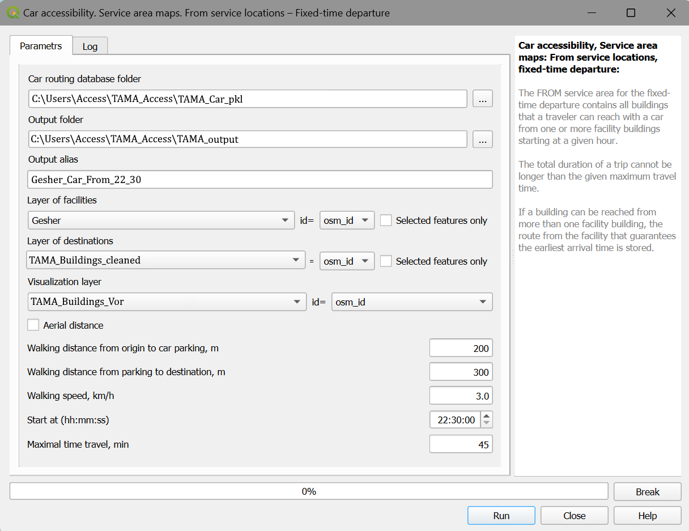
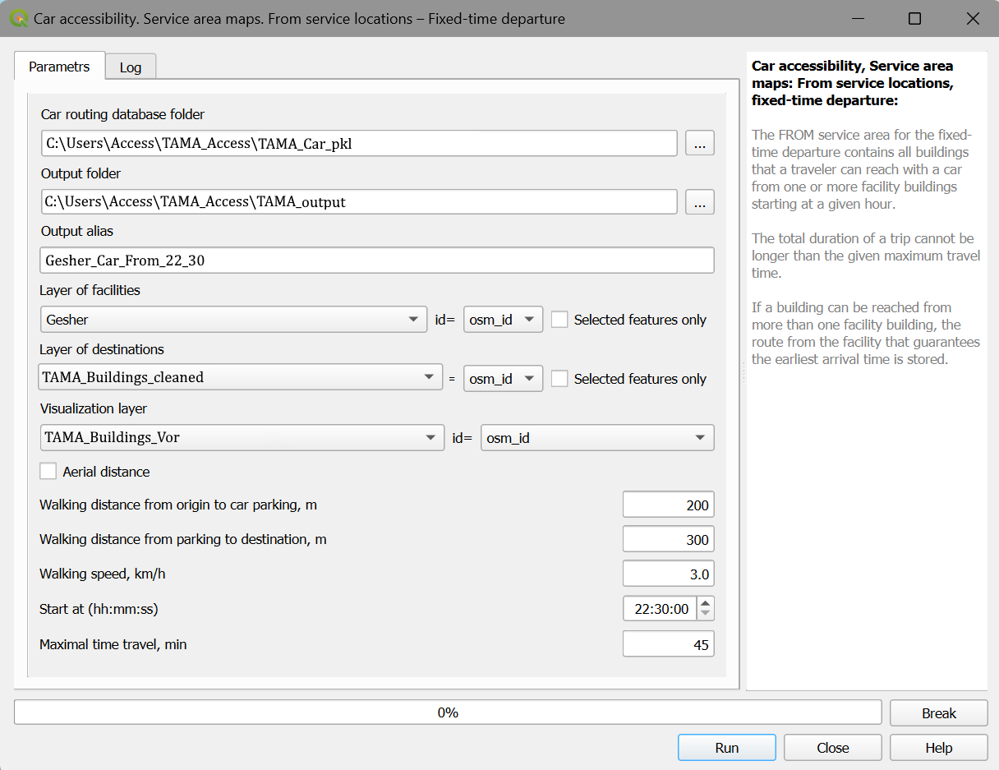

10. Assessing the effect of a new Light Rail Transit line on transport accessibility in the Tel-Aviv Metropolitan Area
This section presents the use of the Accessibility Calculator for assessing the effects of the new “Red” LRT line in the Tel Aviv Metropolitan area (TAMA). The line started functioning at the end of 2023 and became fully operational in 2024. The TAMA area is about 1500 sq. km, and it includes a dozen cities and many minor settlements. The population of TAMA in 2024 is 4.2 million and the number of buildings there is about 252,000. Figure 1 below presents the map of TAMA and the LRT Red line.


Figure 1. TAMA roads (a); Zoom to the area served by the Red LRT line (b)
The examples of this section are all computed with the Accessibility Plugin v 5_32 and QGIS v3.34. We use a Lenovo ThinkPad X1 laptop with the Intel i7 2.80GHz processor and 32MB memory and accompany each example with the estimates of computing time.
10.1. Let us arrange the data
To study TAMA transport accessibility with and without the Red LRT line, we will use TAMA layers of buildings and roads and two GTFS datasets for Israel for the years 2018 and 2024. We assume that buildings and roads did not change much between 2018 and 2024 and used the 2024 data. These datasets are provided as zip files, see [LINK].
The layers of buildings and roads were selected with the TAMA polygon from the OSM layers of buildings and roads in Israel that were downloaded in June 2024. The road layer was topologically cleaned.
To study the Red line effects, we exploit two GTFS datasets, both for the entire Israel. The 2018 GTFS is downloaded from https://openmobilitydata.org/p/ministry-of-transport-and-road-safety/820/20180711 and the one for 2024 from https://s3.gtfs.pro/files/sourcedata/israel-public-transportation.zip.
The major characteristics of the exploited datasets are presented in Table 1.
Database |
Type |
Number of features |
Size (MB) |
|---|---|---|---|
TAMA Buildings |
Shape |
252,364 |
147 |
TAMA Roads |
Shape |
301,230 |
120 |
Israel GTFS 2018 |
Dataset |
757 |
|
Israel GTFS 2024 |
Dataset |
1,150 |
Table 1. The major characteristics of the TAMA layers and Israeli GTFS datasets The OSM layers of roads and buildings that we use must be topologically cleaned. For roads, all road links must be split at the points of intersection, and links’ ends must connect at junctions. For buildings, there should be no holes in the buildings’ polygons and there should not be overlapping buildings’ polygons. We do not recommend cutting parts of GTFS, because the chance of making a mistake is non-zero, while the increase in performance that you will obtain with the smaller GTFS database will not be significant.
10.2. Data preprocessing
To continue with the Accessibility Calculator, we must clean the layers of buildings and roads, and construct layers for visualization. These processes are described in sections 1 and 2 of the Data Preprocessing and Constructing Databases for Fast Routing section of this tutorial. Let us reproduce the steps of this process.
Click the Clean Road network menu item and choose the layer of roads. This layer can be chosen directly, but we recommend opening it in the current QGIS project before starting the work with the Accessibility Calculator, to confirm that this is the layer you need. Define the folder for the clean road network (Figure 2)
Figure 2. Clean road network dialog
Click the Clean layer of buildings menu item and choose the layer of buildings. This layer can be chosen directly, but we recommend opening it in the current QGIS project before starting the work with the Accessibility Calculator, to confirm that this is the layer you need. Define the folder for the clean layer of buildings, which can be the same as the folder for the clean layer of roads (Figure 3).
Figure 3. Clean layer of buildings dialog
Click the Build visualization layers menu item and choose the layer of building centroids constructed during the cleaning of the layer of buildings. Define the folder for the visualization layers. We recommend making a special folder for these layers (Figure 4).

Figure 4. Build visualization layers dialog
Be ready that data preprocessing takes time. For the areas of TAMA size, it will take about an hour. Most of the time will be spent on roads and buildings’ cleaning. Formally, this stage can be skipped - Accessibility Calculator can work with non-clean layers of roads and buildings. However, cleaning is strongly recommended to ensure that the input data for navigation algorithms are correct. If you skip the construction of the visualization layers, the only layer that you could use for presenting the results will be the layer of buildings.
10.3. Construct databases
The next step is to use the clean layers of roads and buildings and construct databases for transit and car routing. This construction is described in sections 1 and 2 of the Data Preprocessing and Constructing Databases for Fast Routing section of this tutorial. Let us start with the transit routing database.
Click the Transit routing database menu item and choose the layer of roads and buildings. Be careful with the choice of field that represents the building ID. Establish a new folder to store the transit database (Figure 5).
The log file preserves all necessary data on the GTFS database construction for Israeli 2018 GTFS and is stored in the database folder. The time necessary for building the database for the entire Israel is much longer than it took to construct the Car database, 16 min 43 sec (Figure 5).

Figure 5. Transit routing database dialog
Repeat this step with the GTFS datasets of 2018 and 2024. The two databases can be stored in the same folder, while we recommend storing them separately, in the different folders. The log file preserves all necessary data on the GTFS database construction GTFS and is stored in the database folder. The time necessary for building each of the two transit databases for the entire Israel is 16 min 43 sec (Figure 6).
Figure 6. Log file of the Transit routing database construction
Build one more PT dictionary for the 2024 GTFS dataset. Save the results in the TAMA_PT_2024 folder. As we already mentioned, we do not recommend cutting parts of the GTFS. If you decide to use part of the GTFS be sure that your selection is correct, and the result contains all necessary files. As an example, if you choose the part of the GTFS that represents transit lines that are fully within TAMA, you will get about 10% of the country’s transit lines that perform about 25% of the country’s daily departures. Overall, the size of the TAMA GTFS, if constructed, will be about 25% of the Israeli GTFS. The increase in performance that you will obtain will be less than 50%. The next step is to construct a database for car routing. Before you do that, check the tables of the average car speeds by link types and congestion delay index, and edit, if necessary, the default values. If you are interested in comparing accessibility for different values of the average car speed or congestion index, build a special database for each set, this is a relatively fast process that, usually, takes less than 5 minutes.
Click the Car routing database menu item and choose the layer of roads and buildings. Be careful with the choice of fields that represent the link’s speed, type, traffic direction, and building ID. Establish a new folder to store the car routing database before providing its name in the dialog box (Figure 7).
Figure 7. Car routing database dialog
The log file preserves all necessary data on the TAMA CAR dictionary construction and is stored in the CAR dictionary library (Figure 8).
Figure 8. Log file of the Car routing database construction
As can be seen, the time of the TAMA CAR database construction took 2 mins 11 sec. The characteristics of the three constructed databases are in Table 2. Importantly, for the source data of a GB size, the size of the databases is twice as small as that of the source.
Dataset |
Construction time (mins) |
Source files total size (MB) |
Dataset size (MB) |
|---|---|---|---|
CAR |
2:11 |
267 |
194 |
PT2018 |
16:43 |
1,125 |
430 |
PT2024 |
26:21 |
1,417 |
595 |
Table 2. The characteristics of three TAMA databases
10.4. Accessibility of a single location
The example we have chosen for illustrating service area maps is the accessibility of the Gesher (Bridge) theater in the Yafo region of Tel Aviv.
10.4.1. From/To-accessibility, fixed-time arrival/departure
Let us estimate Gesher’s transit accessibility for the visitors at 20:00 when the performance starts, and the visitors’ ability to get back home at 22:30, when it ends. In formal terms, we consider one facility and assess its to-accessibility at 20:00 and from-accessibility at 22:30. The accessibility computations, in all possible regimes, demand the definition of parameters that define travelers’ behavior. Below, for the PT trips, we assume that:
Minimum number of transfers = 0
Maximum number of transfers = 1
Maximum walking distance from the origin building to the first PT stop = 400 m
Maximum distance between stops when changing lines = 200 m
Maximum walk distance from the last PT stop to the destination building = 400 m
Walking speed = 3.0 km/h
Maximum waiting time at the first PT stop = 10 min
Maximum waiting time at the transfer stop = 5 min
Boarding time gap = 15 sec
Maximum travel time = 45 min
Additional parameters for the single location accessibility computations are the arrival and departure times, and we will use 20:00 for the backward, and 22:30 for the forward accessibility, respectively. All these parameters are part of the UI dialog, and Figure 9a below presents this dialog. Importantly, the network and not aerial distance is used for all our computations below (the air distance checkbox is disabled) and maximal trip duration is set to 45 minutes. As can be seen in the figure, the to-accessibility is computed for the 2018 state of the PT network, and the folder for storing the results is TAMA_results. On Run, the folder of results will be created and, after the computations finish in 9 seconds (Figure 9b) this folder will contain two files: The log file log_BPTGesher.txt, and BPTGesher_45m_tot_265984731.csv file of results. The 265984731 in the name of the result file is an OSM_ID of the Gesher Theater building. Then, the CSV file of results is joined to the visualization layer and presented as a map.


Figure 9. The dialog of the Transit accessibility map → Single area → To facilities – fixed time arrival (left) and the Log file of the computations (right)
The maps of accessibility to/from the Gesher theater, two before and two after the Red LRT line was introduced are presented in Figure 10. It took 9-10 seconds per scenario to compute each. You can notice that the areas accessible with up to 45 minutes trip after the Red LRT line was introduced are larger than the areas that were accessible during the same time before. We will compare accessibility in 2018 and 2024 and assess the Red line effect quantitatively in the Compare Accessibility section below.


Figure 10. The results of the Transit accessibility → Service area maps computations of the Gesher Theater in Yafo. To service locations – Fixed-time arrival at 20:00, in 2018 (top left) and 2024 (top right). From service locations – Fixed-time departure at 22:30, in 2018 (bottom left) and 2024 (bottom right)
10.4.2. From/To-accessibility, schedule-based arrival/departure time
Schedule-dependent accessibility considers travelers who know the transit schedule and start their trip only when they see, with some smartphone app, the convenient bus arriving at the departure or arrival stop. An example is a traveler who plans to go shopping between 10-10:30 in the morning or wants to get to a fish market that opens at 8:00 during the first half an hour of the market work. Formally, the schedule-based travel period can be shifted within the interval of the traveler’s flexibility and the only difference in schedule-based accessibility calculation dialogs is an additional parameter that defines the flexibility of the trip start or arrival time. In the case of from-accessibility, “Start time” is substituted by “The earliest start time,” and the “Maximum delay (in minutes)” is an additional parameter that defines the start time flexibility.
In the case of to-accessibility, “The arrival time” is substituted by “The earliest arrival time” while the maximum lateness (in minutes) is a parameter that defines the arrival time flexibility.

The travel time in case of schedule-based accessibility does not include waiting at the first stop and that is why the schedule-based accessibility is always higher than the fixed-time one and is less sensitive to the start or arrival time that can freely slide within the intervals of flexibility. As an example of the schedule-based accessibility to/from the Gesher Theater, we consider the following framework: There is a photo exhibition in the theater foyer, and many visitors are ready to arrive at the theater any moment between 19:30 and 20:00, to see the exhibition before the performance. They also kept in mind that the theater café serves drinks and snacks long after the performance is over and it’s worth waiting for some time after the performance is over for the empty buses. Four maps of schedule-based accessibility to/from the Gesher Theater in the year 2018, before the Red LRT line was constructed and in 2024, when it became fully functional are presented in Figure 11. It took 9-10 seconds per scenario to compute each. You can notice that the areas accessible with up to a 45-minute trip after the Red LRT line was introduced are larger than the areas that were accessible during the same time before. We will compare schedule-based accessibility in 2018 and 2024 and quantitatively assess the Red line effect for the users that plan their trips based on the transit schedule in the Compare Accessibility section below.


Figure 11. The results of the Transit accessibility → Service area maps computations of the Gesher Theater in Yafo. To service locations – Schedule-based arrival at 20:00, in 2018 (top left) and 2024 (top right). From service locations – Schedule-based departure at 22:30, in 2018 (bottom left) and 2024 (bottom right)
10.4.3. Single location CAR accessibility
CAR accessibility computations demand fewer parameters than transit-based calculations and the schedule-dependent accessibility is irrelevant here. However, assessment of the car travel time demands knowledge of the traffic speed along the route and this information is hardly available. The only source of systematic knowledge of the traffic speed we are aware of is Google API and we plan to relate car accessibility calculations to the Google data on traffic speed in the next version of the Accessibility Calculator. For now, to calculate CAR accessibility, we assume that the average speed on the road link is defined by the link’s type and the level of congestion in the hour of travel. The table of the characteristic speeds for the OSM classification of links is supplied with the plugin and is in the folder of each CAR routing database that you construct. The name of the table is Car_speed_by_link_type.csv and it can be edited by the user. See more details on this table in this section. As a car service area map example, we calculate car accessibility of the Gesher Theater in Yaffo: To-accessibility, to the performance that starts at 20:00, and from-accessibility at 22:30, when the performance ends (Figure 12).
 

Figure 12. Car accessibility map → Single location computations. In the to-accessibility dialog (left), Gesher is a destination origin and TAMA buildings are origins; in the from-accessibility dialog (right), it's vice versa
The maps of the Gesher’s to- and from-accessibility (Figure 13) look much simpler than those of the PT accessibility. It’s worth noting, however, that the car accessibility from the theater at 22:30, when the congestion is over, is essentially higher than to-accessibility at 20:00 when the congestion is still there. Overall, car accessibility at 20:00 and 22:30 is essentially higher than PT accessibility for the same conditions.


Figure 13. Car accessibility to the Gesher Theater at 20:00 (left), when the congestion is still there, and from the Theater at 22:30, without congestion (right)
10.5. Accessibility of every location in a region
Service area maps present the accessibility of one or several facilities. However, the infrastructure changes affect many locations at once and the Region part of the Accessibility Calculator assesses the effects of these changes for all locations in the region. A building remains the basic unit of the Region calculations and, thus, accessibility there is calculated for every building. One cannot expect that calculations of regional accessibility for the region with several thousand buildings will result in several thousand travel time-based accessibility maps. Instead, to assess the accessibility of the region we employ aggregate measures. An example of the aggregate measure is the number of buildings that may be accessed in a given time. In the case of the from-accessibility, this is the number of buildings that can be accessed in a given time from each building in the region. In the case of to-accessibility, this is the total number of buildings from which each building in the region can be accessed in a given time. The aggregate accessibility measures are stored at a user-defined time resolution, typically of 5 minutes. The total number of accessible buildings is a default measure of region accessibility and is always calculated. The user can define more measures of this kind, like the number of buildings of a certain type, the number of residents, or the number of jobs in all buildings or buildings of a certain type. Any aggregate characteristic that can be calculated based on the buildings’ attributes can be chosen. Let us continue the assessment of the Red LRT line’s effect on transport accessibility for the entire city of Tel Aviv. The number of buildings in Tel Aviv is 40K and, different from the single location accessibility, the time necessary for region calculations will be several hours. In the example below we limit ourselves to the default measure – the number of accessible buildings.
10.5.1. Region transit accessibility, fixed-time arrival/departure
Figure 14 presents the parts of Region maps dialogs that differ from the dialogs of the Service area maps: Region maps → From every location – Fixed-time departure (Figure 14a) and Region maps → To every location – Fixed-time arrival (Figure 14b). In the case of from-accessibility, the buildings of a region are origins and we have to set the layer of destinations. In the case of the to-accessibility, the region’s buildings are destinations and we have to set the layer of origin buildings we start at. In both cases, the result, however, will contain one record for each building only – the number of buildings that can reached from a building or the number of buildings from which the building can be reached from with the public transport in 5, 10, etc. minutes.


Figure 14. The set up of the layer of the region’s buildings and the layers of the origins and destinations for the Transit accessibility map → Region map → from every location (a) and Transit accessibility map → Region maps → from every location (b).
The second part is a choice of the attributes for aggregation (Figure 15). It looks the same for all options – the user can aggregate any of the building’s attributes and the sum of each of these attributes over accessible buildings, by the time bins of [Maximum travel time]/[Number of bins] will be stored as a result.

Figure 15. Setup of the number of bins and choice of the attributes to aggregate for the Transit accessibility → Region maps → From/To all locations - Fixed-time accessibility
To remind you, if the maximum travel time does not contain an integer number of bins, the results are also stored for the maximum travel time. If you are interested in computing the weighted sum of some attribute, calculate this weighted attribute for each building and then sum it up with the Accessibility Calculator. Figure 16 presents maps of region accessibility for 2018 before the red LTR line was established in 2024 when the line was in full operation. We will compare them numerically in the next section.
Figure 16. The maps of region accessibility for 2018 before the red LTR line was established (left) and in 2024 when the line was in full operation (right)
10.5.2. Region transit accessibility, schedule-dependent arrival/departure time
Here, the region accessibility is calculated according to the schedule-dependent view. In all other respects, computations repeat the fixed-time approach.
10.5.3. CAR accessibility
Here, the region accessibility computations for each of the region’s buildings are performed for cars. In all other respects, it repeats the PT approach.
10.6. Compare accessibility maps
The goal of our exemplary study is to assess the effects of the Red LRT line. Now, when the accessibility maps are constructed, we can compare them. To remind, the Accessibility Calculator provides three measures of difference:
Ratio: Result_1/Result_2: The ratio of the result of the first scenario to the results of the second scenario, for the overlapping part of the outputs.
Difference: Result_1 - Result_2: The difference between the result of the first scenario and the results of the second scenario, for the overlapping part of the outputs.
Relative difference: [Result_1 - Result_2]/Result 2: The difference between the result of the first scenario and the results of the second scenario, for the overlapping part of the outputs. The result is presented in percents.
For each of the three measures, in addition to the map of the measure, two more maps are presented. The first one presents the buildings that are accessible in Scenario 1 but not accessible in Scenario 2 (Result_1 is not NULL, while Result_2 is NULL). The second map presents the buildings that are in Scenario 2 but not accessible in Scenario 1 (Result_2 is not NULL, while Result_1 is NULL). We employ the relative difference for comparing accessibility maps for 2024 when the Red LRT line is functioning, and in 2018, before the Red line was established.
10.6.1. Compare single-location fixed-time accessibility maps
Our first question is “Whether the Red Line increased the accessibility for Gesher visitors who arrive by public transport?”. To reply, we compare maps of to-accessibility at 20:00 and from accessibility at 22:30 for the years 2024 and 2018, calculating
Figure 17 presents the relative difference between two to-accessibility maps, including the “only” parts.

Figure 17. Comparison of transit accessibility maps for Gesher theater visitors at 20:00 in 2018 and 2024. Relative difference (a); Areas that are accessible in 2018 or 2024 only (b)
As can be seen, overall, the Red Line essentially improved transit accessibility for the visitors who get to Gesher’s performance. In 2024, the theater can be reached in less than 45 minutes from 44646 buildings, while in 2018 from 34437 buildings only (you should analyze the output CSV files to know these numbers). The green shades denote buildings from which the transit travel time in 2024 is lower than in 2018, and these areas cover 60% of the overlapping areas. Yet there are areas from which transit travel to Gesher will take more time in 2024 than in 2018. More comparison studies will help us to understand the reasons for the differences. One can compare the to-accessibility maps for the longer maximum travel time or go deeper and, based on the full output of the service area computations with the full description of the trip (see Service area computations - the log file and the structure of the report), investigate how the travelers get to the Gesher Theater from each of the “only” parts in 2018 and 2024. To conclude this section, let us compare fixed-time accessibility from the Gesher Theater at 22:30, in 2024 and 2018 (Figure 18): Qualitatively, but not quantitatively, the differences revealed in Figure 17 are repeated.
Figure 18. Comparison of transit accessibility maps for Gesher theater visitors at 20:00 in 2018 and 2024. Relative difference (a); Areas that are accessible in 2018 or 2024 only (b)
10.6.2. Compare fixed-time and schedule-based accessibility
To assess the effect of the schedule-based view of the accessibility let us compare the schedule-based and fixed-time 2024 accessibility maps for the Gesher visitors, to-accessibility maps for the performance start at 20:00 and from-accessibility maps for the performance end of 22:30. Figure 19 presents maps of two relative difference measures
As can be seen, the schedule-based accessibility is always higher than the fixed-time based.

Figure 19. Comparison of the schedule-based and fixed-time accessibility maps for the Gesher Theater in 2024. To-accessibility at 20:00 (a); From-accessibility at 22:30 (b)
10.6.3. Compare Region accessibility
Comparison of the Region accessibility maps goes in the same way as the comparison of the maps of service areas. Figure 20 presents this comparison for the from-accessibility in 2024 and 2018 for the fixed-time trip starting at 08:00 in the morning. As can be expected, the Red LRT line essentially increased accessibility for most of the Tel Aviv locations. Yet some locations, far from the Red LRT line, have lower accessibility in 2024 than in 2018 due to the changes in the bus lines network. It is worth noting that in the case of service area maps when the travel times are compared, the range of the differences is limited by the maximum travel time. In the case of Region accessibility, the differences can be much higher. This happens when the accessibility of a building is very low in one of the scenarios since there is no PT line at a walkable distance from it and all accessible buildings can be reached by foot only, while in the second scenario transit lines get closer, and the number of accessible buildings becomes much higher.

Figure 20. The differences in region from-accessibility in 2024 and 2018, for the fixed time trip starting at 08:00 in the morning